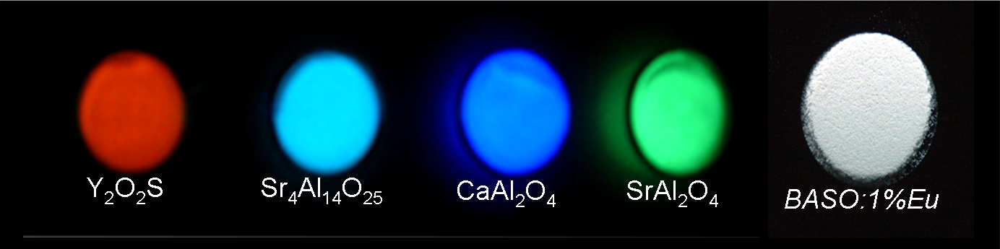
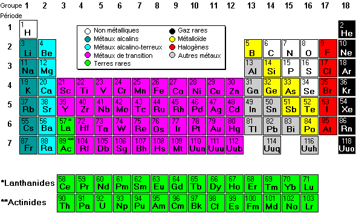

|
La t�l�vision couleur,
|
LCD qui utilisent de l�indium sous forme d�ITO (Indium-Tin Oxyde)
Plasma qui utilisent des terres rares sous forme de luminophores ("phosphors")
Les atomes de terres rares composent les luminophores dans des pixels des �crans Plasma. C'est les metales tres rares comme Erbium, Europium, Yttrium, ... Comme une recette de cuisine, le composition de mat�riaux dans un pixel pour chaque couleur sont tr�s sp�cifiques :
- Bleu : Ba Mg Al10 O17: Eu
- Rouge (Y, Gd) BO3: Eu (a remplac� Y2O3: Eu)
- Vert : (Y, Gd) BO3: Tb
- Rouge (Y2O3: Eu; Sr TiO3: Pr �)
- Vert (Y3 (Al, Ga)5 O12: Tb; Y2 SiO5: Tb, SrGa2S4:Eu�)
- Bleu (Y2 Si O5: Ce)

Tableau p�riodique des �l�ments : Les terres rares sont en verte
